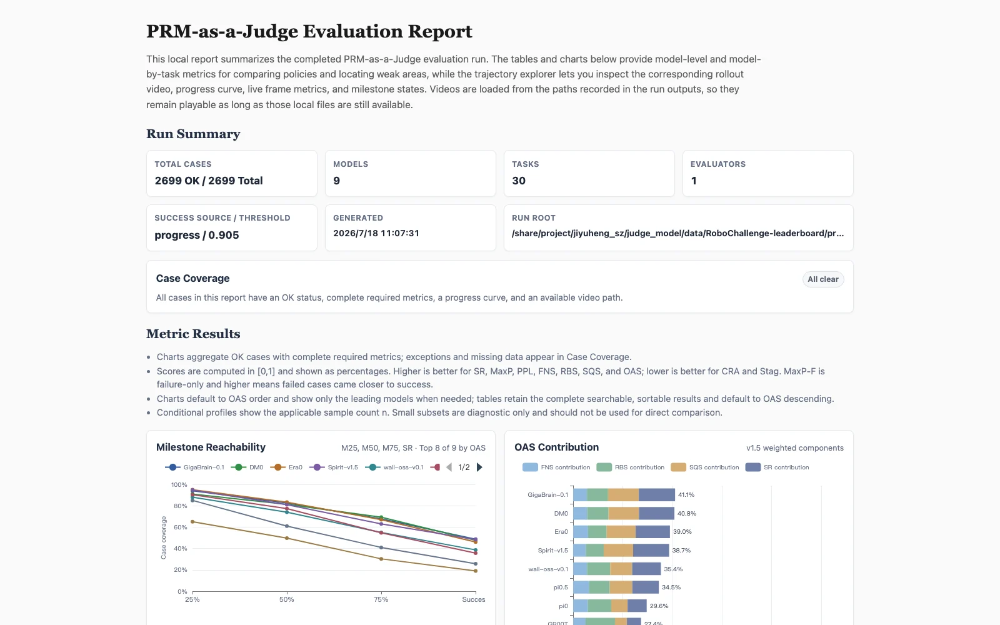
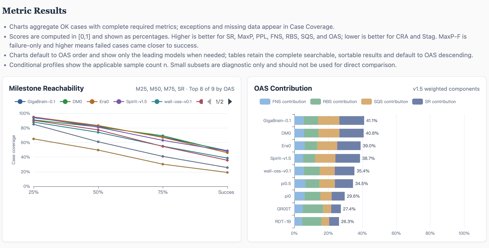
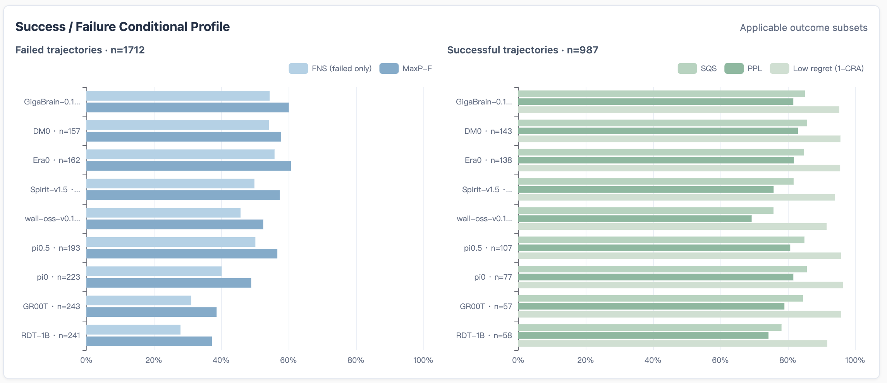
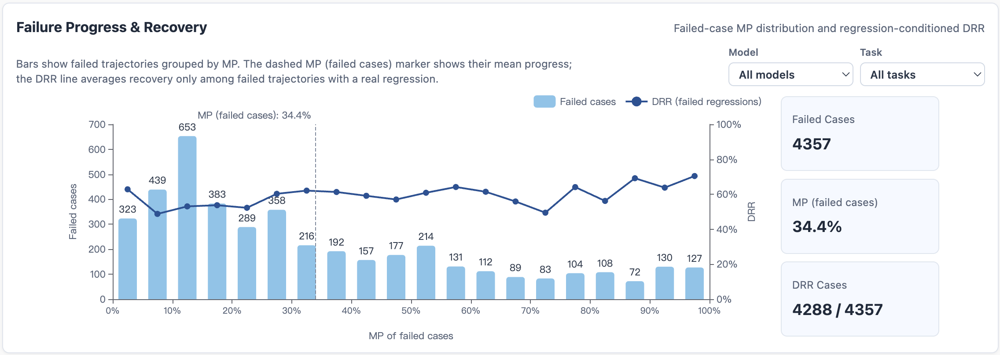
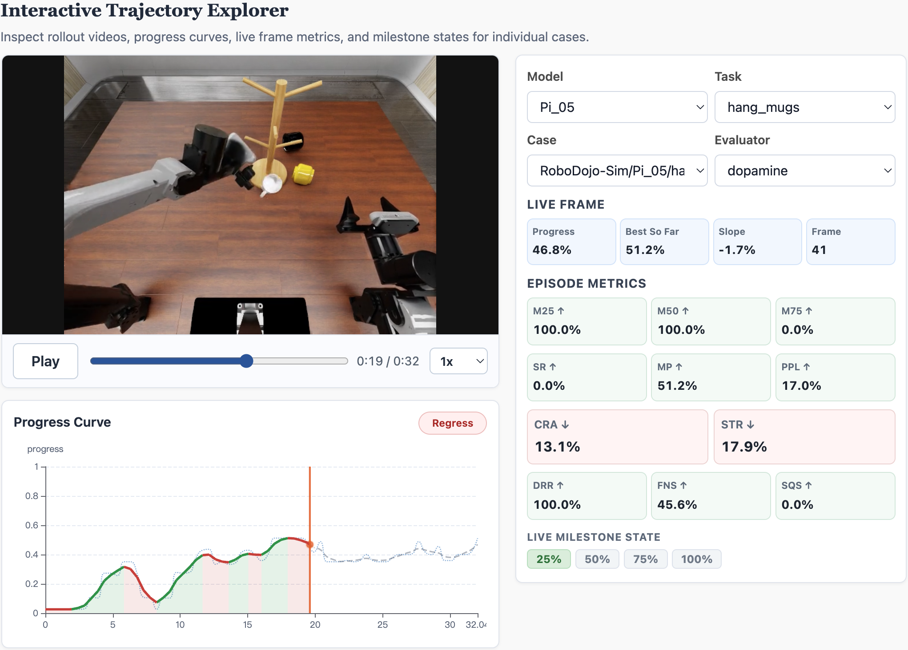

Input: Manifest Format
The default input is a JSONL manifest. Each line describes one rollout case. Paths may be absolute or relative to the manifest file.
Single View
{"case_id":"case_001","task_name":"put_can","task":"put the can into the basket","video":"videos/case_001.mp4"}Main View with a Single-Arm Robot Wrist View
{"case_id":"case_002","task_name":"put_can","task":"put the can into the basket","video":"high.mp4","wrist_video":"wrist.mp4"}Main View with Bimanual Robot Wrist Views
{"case_id":"case_003","task_name":"put_can","task":"put the can into the basket","video":"high.mp4","left_wrist_video":"left.mp4","right_wrist_video":"right.mp4"}With a Goal Image, Outcome Label, and Benchmark Name
goal_image shows the desired final state; label records a known
success or failure outcome; benchmark identifies the source benchmark or dataset;
and model identifies the policy or model that generated the rollout.
{"case_id":"case_004","task_name":"arrange_flowers","task":"arrange the flowers in the vase","video":"h.mp4","wrist_video":"w.mp4","goal_image":"goal.png","label":"success","benchmark":"RoboTwin","model":"pi0"}| Field | Requirement | Description |
|---|---|---|
case_id |
● Required | Stable case identifier. The loader raises an error if it is missing. |
task |
● Required | Natural-language task description used for evaluation and passed to the selected PRM model when applicable. instruction and task_prompt are accepted aliases. |
video |
● Required | Main-view rollout video path. It may be a third-person, overhead, or other view that clearly shows the operation process. |
wrist_video |
○ Optional | Wrist-camera path for a single-arm robot. If the selected Judge Model supports multi-view input, it automatically uses the main-view and wrist-view videos together. Do not combine it with the bimanual wrist fields. |
left_wrist_video / right_wrist_video |
○ Optional pair | Left- and right-wrist camera paths for a bimanual robot. If the selected Judge Model supports multi-view input, it automatically uses the main-view, left-wrist, and right-wrist videos together. The two fields must be provided together and cannot be combined with wrist_video. |
task_name |
○ Optional | Short task name used for grouping, filtering, and output directories. If omitted, the program automatically uses the task text as the task name. |
goal_image |
○ Optional | Image of the desired final state. You can use the final frame of a successful demonstration or another image that clearly shows the goal state. |
label |
○ Optional | Known outcome of the rollout: success or failure. By default, a single progress threshold separates successful and failed cases, but the same threshold may not be suitable for every rollout. When reliable Benchmark labels are available, set --success-source label to use the labels for SR and to assign successful and failed rollouts to SQS and FNS, respectively. |
benchmark |
○ Optional | Dataset or benchmark name copied into reports. |
model |
○ Optional | Name of the policy model that generated the rollout. |
progress / progress_path |
○ Optional | Imports a progress curve generated by an external PRM. Put the progress values directly in progress, or use progress_path to point to a JSON file containing them. Use with --prm recorded; the toolkit then performs curve postprocessing, metric calculation, and report generation without running a PRM model. |
Output: Evaluation Results
Outputs are written to eval/results/run_YYMMDD_HHMMSS/ by default.
| File | Use it for |
|---|---|
run_params.json |
Resolved CLI options and runtime settings for reproducibility. |
run_summary.json |
Total, successful, failed, and aggregated metric counts for the run. |
per_case.jsonl |
Raw and processed progress curves plus metrics for each rollout. |
benchmark/model/task/case/result_summary.json |
Per-case result file under the case output directory. |
summary.csv |
Metrics aggregated by benchmark, policy model, and task, including case counts and metrics such as MaxP, SR, and PPL, for comparing task and model performance. |
leaderboard.csv |
Model-level summary for comparing policies. |
report.md |
Markdown run overview listing total cases, cases evaluated without runtime errors, and errors, with references to detailed CSV and JSONL outputs. |
discovery_manifest.json |
Resolved input paths, runtime choices, and reproducibility metadata. |
visualizations/curve_metrics.csv |
Per-case curve metric details. Each row includes case and task information, PRM evaluation method, policy model, curve length, and progress metrics such as MaxP, SR, and PPL for filtering and downstream analysis. |
visualizations/report.html |
Local interactive HTML report generated when --visualize or
VISUALIZE=1 is enabled. Open it in a browser to review rollout
videos, progress curves, live frame metrics, milestones, and sortable
model-level, model-by-task, and per-case metric tables.
|
visualizations/visualization_report.md |
Visualization artifact index and plot-generation status. |
visualizations/case_plots.csv |
Per-case curve plot index. Each row maps a case, task, PRM evaluation method, and policy model to its PNG file path. |
visualizations/cases/*.png |
Static progress-curve plot for each case, comparing raw and postprocessed curves and showing the success threshold and key curve positions; generated when matplotlib is installed. |
Generate visualizations after a run has finished:
prm-judge visualize --run-root eval/results/run_YYMMDD_HHMMSSFor reliable MP4 playback and seeking, use the built-in Range-aware server:
prm-judge serve \
--run-root eval/results/run_YYMMDD_HHMMSS \
--host 127.0.0.1 \
--port 8000Open http://127.0.0.1:8000/report.html. For a remote server, keep the report service on loopback and create a tunnel from your workstation:
ssh -L 8000:127.0.0.1:8000 user@serverAfter the run completes, the final performance report presents a Model Leaderboard that summarizes the core metrics for every evaluated model. You can also use the interactive trajectory explorer to filter and inspect individual cases, including their rollout videos, progress curves, live-frame values, and per-case metrics.





Default Settings
The table below lists the main defaults in eval/run_eval.sh.
Keep these settings for the first run. After confirming that the evaluation
pipeline works, adjust them for video length, GPU memory, and evaluation goals.
| Setting | Default | When to adjust |
|---|---|---|
| PRM evaluation method | PRM=dopamine |
You need RoboMeter, want to import a progress curve from an external PRM, or want to integrate a custom PRM. |
| Dopamine mode | EVAL_MODE=incremental |
The default incremental mode compares adjacent sampled frames. Use forward to anchor progress estimates to the initial state; use backward when a reliable goal image is available and progress should be evaluated relative to the goal. |
| Success threshold | --success-threshold 0.99 |
Without a reliable label, success is determined by whether MaxP reaches the default threshold of 0.99. Because the MaxP distribution may vary across tasks, adjust the threshold when necessary. |
| Frame sampling interval | FRAME_INTERVAL=72 |
Decrease it for denser progress curves on short videos or fast actions; increase it to speed up inference on long videos. |
| Inference batch size | BATCH_SIZE=10 |
Decrease it when GPU memory is insufficient; increase it when memory is available and higher throughput is needed. |
| GPU selection | GPUS=0 |
Change the index to use another GPU, or provide multiple indices such as GPUS=0,1 to shard cases across GPUs. |
| Outlier handling | OUTLIER_METHOD=local_median |
Set it to none when you need to preserve the raw PRM output. |
| Curve smoothing | SMOOTHING=weighted_windowWeights: [0.1, 0.2, 0.4, 0.2, 0.1] |
Set it to none to preserve an unsmoothed curve, or change the window weights to adjust smoothing strength. |
PRM Evaluation Methods
The toolkit supports several progress-evaluation methods. dopamine uses the
Robo-Dopamine model and is the default; robometer uses the RoboMeter model;
recorded reads precomputed curves without loading a model; and a custom adapter
can integrate your own PRM. Once a progress curve is available, all methods share the same
postprocessing and metric pipeline.
| Use case | Recommended method | Why |
|---|---|---|
| Fine-grained process changes or routine batch evaluation | dopamine (Robo-Dopamine) with EVAL_MODE=incremental |
Compares adjacent sampled states, making it suitable for capturing local, fine-grained progress and regression. |
| Long-horizon, repetitive, or context-dependent actions | robometer (RoboMeter) |
Uses temporal context from video sequences, making it suitable when adjacent states alone cannot distinguish sustained progress, repeated actions, or back-and-forth motion. |
| Debugging metrics without loading a model | recorded (precomputed curves) |
Uses progress or progress_path from the manifest. |
| Integrating another PRM | Custom adapter | Return absolute progress in [0, 1], or configure normalization before metrics. See Custom PRM for the adapter steps. |
Run with RoboMeter
RoboMeter is a sequence-style PRM model. The runner can start a local
RoboMeter HTTP server, wait for /health, evaluate cases, and
shut the server down after the run.
PRM=robometer \
MANIFEST=/path/to/cases.jsonl \
bash eval/run_eval.shReuse an already running server when you want to manage the model process yourself:
PRM=robometer \
MANIFEST=/path/to/cases.jsonl \
ROBOMETER_SERVER_URL=http://localhost:8000 \
ROBOMETER_AUTO_START=0 \
bash eval/run_eval.shPRM=robometer, eval/run_eval.sh uses
ROBOMETER_PYTHON for both the runner and the auto-started
server so video dependencies such as decord or
opencv-python are available. If you call
prm-judge directly, run it from an environment that can
decode your videos.
Dopamine Modes
Robo-Dopamine is a pair-style PRM. It constructs a progress curve by scoring sampled states with one of three comparison modes.
| Mode | What is compared | How progress is interpreted | When to use |
|---|---|---|---|
incremental (default) |
Previous sampled state as before, current sampled state as after. |
The model score is treated as a local progress change and accumulated over time. | Default mode for local step-wise change analysis. Consider a larger FRAME_INTERVAL if adjacent samples are too similar. |
forward |
Start frame as before, current sampled state as after. |
The model score is treated as the current absolute progress estimate. | Use it when start-to-current change is easier to judge than distance to the goal image. |
backward |
Goal image as before, current sampled state as after. |
The model score is converted to progress with progress = 1 + score. |
Use it when a goal image or goal placeholder is available and goal-relative scoring is preferred. |
Examples:
EVAL_MODE=incremental MANIFEST=cases.jsonl PRM_PATH=/path/to/prm bash eval/run_eval.sh
EVAL_MODE=forward MANIFEST=cases.jsonl PRM_PATH=/path/to/prm bash eval/run_eval.sh
EVAL_MODE=backward MANIFEST=cases.jsonl PRM_PATH=/path/to/prm bash eval/run_eval.shVideo Views and Goal Images
Every case must provide video as its main view. Wrist views and
goal_image are optional: wrist videos add details about grasps,
contacts, and occluded areas, while a goal image describes the desired final state.
Video fields
video: required main-view video path, such as a third-person, fixed-camera, or overhead view.wrist_video: wrist-view video for a single-arm robot. Do not combine it with the bimanual wrist fields.left_wrist_videoandright_wrist_video: left- and right-wrist videos for a bimanual robot. Provide both fields together.
How Robo-Dopamine uses views
| Views provided in the manifest | Robo-Dopamine behavior |
|---|---|
video only |
Reuses the main view for all camera inputs required by the model, which is suitable for quick tests. |
video + wrist_video |
Uses video as the main view and reuses the single-arm wrist video for both wrist inputs. |
video + left_wrist_video + right_wrist_video |
Maps the main, left-wrist, and right-wrist videos to their corresponding model inputs. |
Selecting a RoboMeter view
RoboMeter evaluates one video view at a time and uses video by default.
To evaluate a wrist view, set ROBOMETER_VIEW to wrist_video,
left_wrist_video, or right_wrist_video. The selected field must
exist in the case; otherwise, that case reports an error.
PRM=robometer \
ROBOMETER_VIEW=left_wrist_video \
MANIFEST=cases.jsonl \
bash eval/run_eval.shHow goal images are used
goal_image is a visual reference for the completed task state.
Robo-Dopamine uses it as REFERENCE END to help locate the current state
along the path from task start to completion; in backward mode, the goal
image is also compared directly with the current sampled state.
- When a reliable success-state image is available, set
goal_imagein the manifest; for example, use the final frame of a successful demonstration. - If no goal image is available, omit the field. PRM-as-a-Judge automatically uses
eval/examples/blank.pngas a placeholder. - Do not use the final frame of the rollout being evaluated unless that rollout is known to have succeeded; otherwise, a failure state may be treated as the task goal.
Multi-GPU
The default uses one GPU to keep the command predictable. On larger
batches, set GPUS or pass --gpus to shard cases
across local devices.
GPUS=0,1,2,3 MANIFEST=cases.jsonl PRM_PATH=/path/to/prm bash eval/run_eval.shEach worker loads one PRM instance on its assigned GPU, processes its shard, and the runner merges shard outputs at the end. This is simple local data parallelism and is usually enough for evaluation batches.
You can also ask the runner to choose GPUs automatically. In the current
implementation, GPUS=auto queries nvidia-smi,
selects devices whose used memory is below 1024 MiB, and falls back to
GPU 0 if no such device is found.
GPUS=auto MANIFEST=cases.jsonl PRM_PATH=/path/to/prm bash eval/run_eval.sh
For RoboMeter multi-GPU runs, each shard uses
ROBOMETER_SERVER_PORT + shard_index for an auto-started
server, so choose a free base port when running several evaluations on
the same machine.
Progress Curve Standard
The metric stack consumes normalized absolute progress curves. Every PRM adapter should eventually produce:
progress[t] in [0, 1]| PRM output | Convert before metrics |
|---|---|
Absolute progress in [0, 1] |
Use directly, then clip small numerical overflow. |
Absolute progress in [0, 100] |
Divide by 100 with --normalize 0_100. |
| Step-wise delta progress | Use --source-type delta, accumulate over time, then clip to [0, 1]. |
| Uncalibrated reward or similarity | Add adapter-specific calibration before metric computation. |
Do not force the curve to be monotonic. Regressions and oscillations are
meaningful signals used by drawdown, recovery, stagnation, and regret
metrics. Results should store both progress_raw and
progress_processed.
Progress Curve Processing
After the PRM produces a raw progress curve, the toolkit applies the following steps:
- Normalize the PRM output to absolute progress in
[0, 1]. - Clip values to
[0, 1]. - Replace isolated local outliers with the local median. The default threshold is
0.35. - Smooth with a weighted temporal window.
p'_t = 0.1*p_{t-2} + 0.2*p_{t-1} + 0.4*p_t + 0.2*p_{t+1} + 0.1*p_{t+2}The default outlier handling and smoothing reduce isolated erroneous spikes and short-term fluctuations. They do not force progress to increase continuously, so genuine regressions remain visible. For example, when a rollout is clearly advancing overall but adjacent-frame scores fluctuate, these steps produce a more stable representation of the trend.
Disable postprocessing when you are debugging raw PRM behavior:
prm-judge eval --manifest cases.jsonl --outlier-method none --smoothing noneChange the smoothing weights from the CLI:
prm-judge eval --manifest cases.jsonl --smoothing-weights 0.05,0.15,0.6,0.15,0.05
The weight list should have odd length, non-negative values, and a
positive sum. It is normalized automatically. For deeper customization,
edit eval/prm_judge/curves.py, especially
parse_smoothing_weights, weighted_smooth, and
PostprocessConfig.smoothing_weights.
Evaluation Metrics
By default, metrics and evaluation reports use the progress curve after outlier handling and smoothing. The raw curve is retained in the outputs mainly for inspecting the PRM's direct predictions and troubleshooting.
↑ means higher is better; ↓ means lower is better.
In the formulas below, p_0 = 0, p_1, ..., p_T is the processed normalized
progress curve, θ is the success threshold, δ = 0.005 is the
default stagnation threshold, and 1[·] is the indicator function.
| Metric | Scope | Formula | Interpretation |
|---|---|---|---|
MaxP ↑ |
All rollouts | Highest progress reached. A higher value means the rollout came closer to completing the task. | |
M25 ↑, M50 ↑, M75 ↑ |
All rollouts | Whether a rollout reached the 25%, 50%, and 75% progress milestones; aggregates report the proportion of rollouts reaching each milestone. | |
SR ↑ |
All rollouts |
default
label source
|
Whether a rollout reached the success threshold, which defaults to 0.99; aggregates report the success rate. |
PPL ↑ |
All rollouts |
|
Measures path efficiency while making progress. Higher values indicate that useful progress is more concentrated. |
CRA ↓ |
All rollouts | Measures cumulative loss caused by regressions. Lower is better; compare rollouts that reached similar progress. | |
Stag ↓ |
All rollouts | Fraction of steps with almost no progress change. Lower values indicate less stagnation. | |
RBS ↑ |
All rollouts |
|
Measures recovery after the largest progress regression. Higher values indicate more complete recovery. |
FNS ↑ |
Failed rollouts |
|
Measures how close a failed rollout came to success by combining its highest progress and milestone completion. |
SQS ↑ |
Successful rollouts |
|
Measures execution quality among successful rollouts, rewarding efficient, low-regret, and low-stagnation behavior. |
CRA is most
informative when comparing rollouts that both achieved similar progress.
A completely stagnant curve may have low regret but still be a poor rollout.
By default, success grouping uses MaxP >= --success-threshold.
Use --success-source label only when benchmark labels should
define success and failure.
Custom PRM
The toolkit separates two responsibilities: a PRM adapter produces a progress curve, and the metric stack computes diagnostics from the standardized curve. This common interface supports both built-in and custom Judge Models.
--prm. It may call a PRM model or, like
recorded, read a precomputed progress curve.
Minimal integration steps
- Create a new adapter file under
eval/prm_judge/prm/and subclassBasePRMAdapter. - Implement
predict(case, output_dir)so it reads the manifest case, runs your PRM, and returns aProgressTrace. - Register the backend name in
eval/prm_judge/cli.py: add it to the--prmchoices and create the adapter inbuild_adapter. - Make sure the returned progress is absolute
[0, 1], or run with the matching--normalizeand--source-typeoptions. - Evaluate with
prm-judge eval --prm your_backend --manifest cases.jsonl.
Adapter checklist
- Read
EvalCasefields such as videos, task text, goal image, and metadata. - Run your PRM and return a progress sequence aligned to sampled frames or video time.
- Decide whether the output is absolute progress, step-wise deltas, or another score.
- Decide whether the scale is
[0, 1],[0, 100], or uncalibrated. - Prefer returning absolute progress in
[0, 1]. If not, pass the matching--normalizeand--source-typeoptions for the whole run.
from prm_judge.prm.base import BasePRMAdapter
from prm_judge.schema import EvalCase, ProgressTrace
class MyAdapter(BasePRMAdapter):
def predict(self, case: EvalCase, output_dir):
scores = run_my_model(case.videos, case.task, case.goal_image)
return ProgressTrace(
case_id=case.case_id,
progress=scores,
source_scale="0_1",
source_type="absolute",
)
Existing adapters under eval/prm_judge/prm/ can be used as
templates. recorded.py is the smallest example, while
robometer.py shows how to wrap an external model service.
Document the model's output scale, semantics, required views,
goal-image behavior, and runtime requirements next to your adapter.
RoboMeter as an example
RoboMeter is integrated as a sequence-style backend through an HTTP
adapter. It reads outputs_progress.progress_pred as an
absolute progress curve in [0, 1]. Because it reasons over
a longer sequence, it is a useful comparison point for repeated-motion
cases where local pairwise judging is not enough.
When you reuse an existing RoboMeter server, PRM-as-a-Judge checks
/model_info and requires the server model path to match
PRM_PATH. This helps avoid accidentally evaluating with an
old checkpoint. The adapter uploads frame arrays as .npy
multipart files, which keeps long-video requests manageable.
Command Reference
Batch evaluate many videos without moving files
MANIFEST=/data/my_rollouts/cases.jsonl \
PRM_PATH=/models/Robo-Dopamine-GRM-8B-Pro \
OUTPUT_ROOT=eval/results/my_rollouts \
bash eval/run_eval.shUse all four local GPUs
GPUS=0,1,2,3 MANIFEST=cases.jsonl PRM_PATH=/path/to/prm bash eval/run_eval.shRun a denser curve for short manipulation tasks
FRAME_INTERVAL=36 MANIFEST=cases.jsonl PRM_PATH=/path/to/prm bash eval/run_eval.shUse benchmark labels for success grouping
prm-judge eval --manifest cases.jsonl --success-source label --visualizeCheck a manifest before spending GPU time
prm-judge eval --manifest cases.jsonl --prm recorded --dry-run --limit 10Compare raw and processed progress
prm-judge eval --manifest cases.jsonl --outlier-method none --smoothing none --visualize
prm-judge eval --manifest cases.jsonl --visualizeFAQ
1. What is goal_image used for?
goal_image is an optional parameter specific to Robo-Dopamine. It provides an
explicit visual reference for the completed task state, helping the model understand what
success should look like, reduce goal ambiguity, and improve progress-judgment accuracy.
Robo-Dopamine uses it as REFERENCE END; in backward mode, the goal
image is also compared directly with the current sampled state. Other Judge Model adapters
do not necessarily use this field.
In practice, set goal_image in the manifest when a reliable success-state
reference is available, preferably the final frame of a manually verified successful
demonstration or a separately captured target state. If no reliable goal image is
available, omit the field; the Robo-Dopamine adapter will use
eval/examples/blank.png as a placeholder, although the evaluation will not
benefit from an explicit goal reference. Do not use the final frame of the rollout being
evaluated unless that rollout is known to have succeeded, because a failure state could
otherwise be treated as the task goal and reduce judgment accuracy.
2. How does Robo-Dopamine estimate progress, and when should I use another PRM as the judge?
Robo-Dopamine is a pair-wise Judge Model. Depending on EVAL_MODE,
it compares two sampled images or states—for example, adjacent samples, the initial
state and the current state, or the current state and a goal reference—to estimate
relative progress. These pair-wise judgments are then linked into a progress curve.
This local comparison works well for many robot manipulation tasks. However, it can be ambiguous for repeated or oscillatory motions and tasks that depend strongly on temporal context. Two images alone may not reveal whether the robot is making sustained progress, repeating an action cycle, or simply moving back and forth. For these tasks, consider a sequence-style PRM that evaluates a longer video sequence, such as RoboMeter, or use it as a comparison.